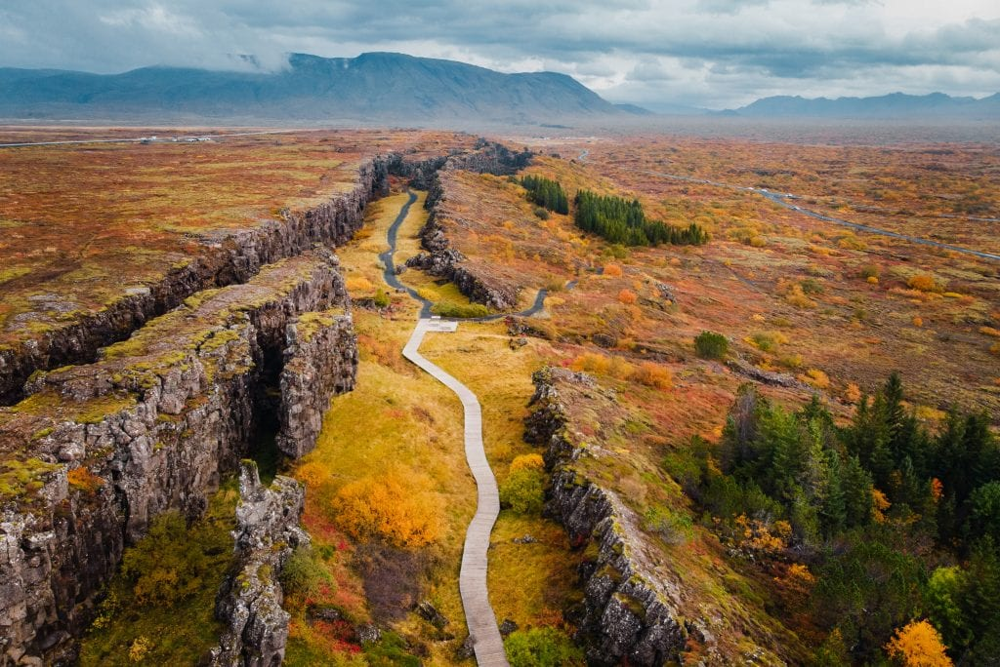

Upplisingar
Saga Íslands og íslensku þjóðarinnar kemur hvergi betur fram á einum stað en á Þingvöllum við Öxará. Þar var Alþingi stofnað um árið 930 og kom það saman á Þingvöllum allt fram til ársins 1798. Meginviðburðir Íslandssögunnar hafa gerst þar og því skipa Þingvellir sérstakan sess í hugum allra Íslendinga. Þingvellir eru í dag friðlýstur helgistaður Íslendinga. Í lögum segir að hið friðlýsta land skuli ævinlega vera eign íslensku þjóðarinnar og undir vernd Alþingis.
